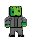

Welcome to My Portfolio
Hi there I'm Aaron
software developer
this webpage is where I will be sharing my continuous improvements and updates to projects, such as my game development journey web design and graphic design through my social media accounts
About Me
Learn More About My Journey
Background
Since I was a kid, I've been passionate about technology and creativity, I would always play games and think to myself how people were able to create such amazing experiences, this then turned into a intrest in game design, which lead me to sofware development, my first taste of coding came from an engineering course which i later dropped for a course focusing on game design and software development.
Skills
- HTML & CSS
- JavaScript
- Python
- Game Design
- UI/UX Design
- Problem Solving
Experience
- Sales Representative for Sky within Currys – Promoted and sold Sky products and services to customers
- Sales Assistant at Currys – Assisted customers with product selection and provided technical advice
- Provided excellent customer service in a fast-paced retail environment
- Handled cash register operations and processed transactions accurately
- Assisted with inventory management and restocking shelves
- Resolved customer issues and ensured satisfaction
- Maintained store cleanliness and organized displays
Gallery
Explore My Work
Web Design
Explore my web design portfolio, including this portfolio website and logo design.
View ProjectsGame Development
Check out my game development projects, featuring interactive gameplay and design.
View ProjectsCharacter Concepts
Discover my character designs and concept art for various creative projects.
View ProjectsWeb Design
Websites & Logo
My Portfolio Website and Other Web Projects
This is the portfolio website you're currently viewing! Built with HTML, CSS, and JavaScript featuring smooth scrolling, fade transitions, and interactive dropdowns, in addition to this web page I have one which was built for a college assignment which i plan to expand upon in the near future including possibly a store for merch as well as a download section for a 2d game demos.
Features: Responsive design, smooth animations, dark theme, orange accent colors
Logo Design
Professional logo design completed. Below are the logos for both my portfolio webpage and my other webpage: for both logos i utilised krita and adobe respectively.
Portfolio Webpage Logo

Royal Flush Header
Tools Used: Design software and techniques used
Game Development
Game Project (Work In Progress)
Project Overview
Although under development I am proud of what little I have built so far, and I am excited to continue improving and expanding the project, turning it into a fun and engaging 2D action platformer I shall try and include updates here and on my social media accounts.
Status: Work in Progress
Features & Mechanics
As it is a work in progress, the features and mechanics are still being developed and refined however i currently have animations as well as basic movement such as walking, jumping, and collision detection implemented which allows for a player death as well as npcs, it additionally features scene transitions and respawn mechanics.
Screenshots & Media
Gameplay demo video.
Character Concepts
Character & Visual Design (Work In Progress)
Character Designs
These are some of my character concepts and designs one being a iconic fictional charecter frankenstein another being a bat which i intend to redesign as more of a monster form for the primary antagonist as well as a future player charecter.
Status: Work in Progress
Design Process
My design process is hard to explain but it would begin finding inspiration which tends to be in the form of different media film comicbooks animation and books a few major ones i can think of are the marvel films, as well as comics DC too espically the bat family,There is also bram stoker and mary shelly really large inspiration, when creating characters, I focus on developing unique traits, backstories, and visual styles that align with the project's theme and narrative whilst taking inspiration from existing media and literature whilst playing around with designs and timelines for characters based on previously created ones.
Gallery

Frankenstein Walk GIF
Enemy Bat GIF
frankenstein spritesheet PNG
Get In Touch
Connect With Me
Feel free to reach out! Connect with me on social media or send me a message.
Other Ways to Connect
Email: aaronmolloy209@gmail.com
Location: Dublin, Ireland
Available for: Freelance projects, collaborations, Tech apprenticeships and Internships